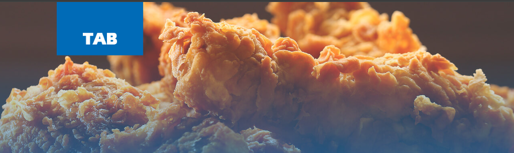

<section id="experience"><!--$--><div class="w-full bg-white dark:bg-neutral-950 font-sans md:px-10"><div class="max-w-7xl mx-auto py-20 px-4 md:px-8 lg:px-10"><h2 class="text-lg md:text-4xl mb-4 text-black dark:text-white max-w-4xl">Deneyimlerim</h2><p class="text-neutral-700 dark:text-neutral-300 text-sm md:text-base max-w-sm">Yıllar içerisindeki deneyimlerim</p></div><div class="relative max-w-7xl mx-auto pb-20"><div class="flex justify-start pt-10 md:pt-40 md:gap-10"><div class="sticky flex flex-col md:flex-row z-40 items-center top-40 self-start max-w-xs lg:max-w-sm md:w-full"><div class="h-10 absolute left-3 md:left-3 w-10 rounded-full bg-white dark:bg-black flex items-center justify-center"><div class="h-4 w-4 rounded-full bg-neutral-200 dark:bg-neutral-800 border border-neutral-300 dark:border-neutral-700 p-2"></div></div><h3 class="hidden md:block text-xl md:pl-20 md:text-5xl font-bold text-neutral-500 dark:text-neutral-500 ">Ağu 2023 - Mar 2025</h3></div><div class="relative pl-20 pr-4 md:pl-4 w-full"><h3 class="md:hidden block text-2xl mb-4 text-left font-bold text-neutral-500 dark:text-neutral-500">Ağu 2023 - Mar 2025</h3><div><h3 class="text-lg font-bold text-neutral-900 dark:text-white mb-2">Kıdemli Restoran Servis Expert @ TAB Gıda (Popeyes)</h3><p class="text-neutral-800 dark:text-neutral-200 text-sm font-normal mb-4">TAB Gıda bünyesinde (Popeyes) kıdemli servis elemanı olarak görev alarak, yoğun iş temposunda müşteri hizmetleri ve servis süreçlerini koordine ettim. Müşteri memnuniyetini en üst düzeyde tutmak amacıyla gıda hijyeni ve kalite standartlarının korunmasını sağladım. Ekip çalışmasına uyum sağlayarak operasyonel verimliliğe katkıda bulundum ve hızlı öğrenme yeteneğimle tüm süreçlere kısa sürede adapte oldum.</p><div class="mb-6"></div><div class="flex flex-wrap gap-2 mt-4"><span class="px-3 py-1 bg-blue-100 dark:bg-blue-900/30 text-blue-700 dark:text-blue-300 rounded-full text-xs">Satış Operasyonu</span><span class="px-3 py-1 bg-green-100 dark:bg-green-900/30 text-green-700 dark:text-green-300 rounded-full text-xs">Ekip Çalışması</span><span class="px-3 py-1 bg-orange-100 dark:bg-orange-900/30 text-orange-700 dark:text-orange-300 rounded-full text-xs">Gıda Hijyeni</span><span class="px-3 py-1 bg-purple-100 dark:bg-purple-900/30 text-purple-700 dark:text-purple-300 rounded-full text-xs">Müşteri Memnuniyeti</span><span class="px-3 py-1 bg-indigo-100 dark:bg-indigo-900/30 text-indigo-700 dark:text-indigo-300 rounded-full text-xs">Hızlı Öğrenme</span></div></div> </div></div><div class="flex justify-start pt-10 md:pt-40 md:gap-10"><div class="sticky flex flex-col md:flex-row z-40 items-center top-40 self-start max-w-xs lg:max-w-sm md:w-full"><div class="h-10 absolute left-3 md:left-3 w-10 rounded-full bg-white dark:bg-black flex items-center justify-center"><div class="h-4 w-4 rounded-full bg-neutral-200 dark:bg-neutral-800 border border-neutral-300 dark:border-neutral-700 p-2"></div></div><h3 class="hidden md:block text-xl md:pl-20 md:text-5xl font-bold text-neutral-500 dark:text-neutral-500 ">Jan 2025 – Present</h3></div><div class="relative pl-20 pr-4 md:pl-4 w-full"><h3 class="md:hidden block text-2xl mb-4 text-left font-bold text-neutral-500 dark:text-neutral-500">Jan 2025 – Present</h3><div><h3 class="text-lg font-bold text-neutral-900 dark:text-white mb-2">Yazılım Geliştirici &amp; Agile Ekip Üyesi @ Pixa Software</h3><p class="text-neutral-800 dark:text-neutral-200 text-sm font-normal mb-4">Vue 3 ve TypeScript ile arayüzü modernize ederek sayfa yüklenme hızlarını %60 iyileştirdim. Kod tabanındaki kritik yarış koşullarını ve bellek sızıntılarını çözdüm. 15 kişilik Agile ekipte kod kalitesi girişimlerine liderlik ettim.</p><div class="grid grid-cols-1 md:grid-cols-2 gap-4 mb-6"></div><h3 class="text-lg font-bold text-neutral-900 dark:text-white mb-2">Freelance Yazılım Geliştirici @ Pixa Software</h3><p class="text-neutral-800 dark:text-neutral-200 text-sm font-normal mb-4">Freelance olarak yazılım geliştirme hizmetleri sunmaya devam ediyorum. Kurumsal web siteleri, responsive e-posta şablonları ve pazarlama sayfalarını yönetiyorum.</p><div class="grid grid-cols-1 md:grid-cols-2 gap-4 mb-6"></div><div class="flex flex-wrap gap-2 mt-4"><span class="px-3 py-1 bg-emerald-100 dark:bg-emerald-900/30 text-emerald-700 dark:text-emerald-300 rounded-full text-xs">Vue 3</span><span class="px-3 py-1 bg-pink-100 dark:bg-pink-900/30 text-pink-700 dark:text-pink-300 rounded-full text-xs">SCSS</span><span class="px-3 py-1 bg-orange-100 dark:bg-orange-900/30 text-orange-700 dark:text-orange-300 rounded-full text-xs">Agile</span></div></div> </div></div><div class="flex justify-start pt-10 md:pt-40 md:gap-10"><div class="sticky flex flex-col md:flex-row z-40 items-center top-40 self-start max-w-xs lg:max-w-sm md:w-full"><div class="h-10 absolute left-3 md:left-3 w-10 rounded-full bg-white dark:bg-black flex items-center justify-center"><div class="h-4 w-4 rounded-full bg-neutral-200 dark:bg-neutral-800 border border-neutral-300 dark:border-neutral-700 p-2"></div></div><h3 class="hidden md:block text-xl md:pl-20 md:text-5xl font-bold text-neutral-500 dark:text-neutral-500 ">2023</h3></div><div class="relative pl-20 pr-4 md:pl-4 w-full"><h3 class="md:hidden block text-2xl mb-4 text-left font-bold text-neutral-500 dark:text-neutral-500">2023</h3><div><h3 class="text-lg font-bold text-neutral-900 dark:text-white mb-2">Kurucu Ortak (CEO) &amp; Yazılım Geliştirici @ Visioncore</h3><p class="text-neutral-800 dark:text-neutral-200 text-sm font-normal mb-4">12 kişilik mühendislik ekibinde CEO olarak stratejik iş hedeflerini, ürün vizyonunu ve B2B müşteri ilişkilerini yönetirken aktif olarak kod yazdım. Mercedes-Benz Yetkili Servisleri için otomatik araç takip sistemi geliştirdim. Güneş Paneli Kusur Tespiti için 12 farklı endüstriyel kusur sınıfını tespit eden bir Computer Vision ürünü tasarladım.</p><div class="flex flex-wrap gap-2 mt-4"><span class="px-3 py-1 bg-yellow-100 dark:bg-yellow-900/30 text-yellow-700 dark:text-yellow-300 rounded-full text-xs">Python</span><span class="px-3 py-1 bg-red-100 dark:bg-red-900/30 text-red-700 dark:text-red-300 rounded-full text-xs">OpenCV</span><span class="px-3 py-1 bg-cyan-100 dark:bg-cyan-900/30 text-cyan-700 dark:text-cyan-300 rounded-full text-xs">TensorFlow</span><span class="px-3 py-1 bg-violet-100 dark:bg-violet-900/30 text-violet-700 dark:text-violet-300 rounded-full text-xs">IoT</span></div></div> </div></div><div style="height: 1658.55px;" class="absolute md:left-8 left-8 top-0 overflow-hidden w-[2px] bg-[linear-gradient(to_bottom,var(--tw-gradient-stops))] from-transparent from-[0%] via-neutral-200 dark:via-neutral-700 to-transparent to-[99%]  [mask-image:linear-gradient(to_bottom,transparent_0%,black_10%,black_90%,transparent_100%)] "><div class="absolute inset-x-0 top-0  w-[2px] bg-gradient-to-t from-purple-500 via-blue-500 to-transparent from-[0%] via-[10%] rounded-full" style="height:0px;opacity:0"></div></div></div></div><!--/$--></section>
